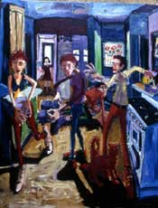

NextNew
July 22 - September 17, 2005
click to enlarge images
rollover and pause for details


|
|||
NextNew
|
|||
| Hung Liu Introducing: | Rosana Castrillo Diaz | ||
| Frank Lobdell Introducing: | Norm Rosenberger | ||
|  | |||
| Manuel Neri Introducing: | Mikio Matsuo | ||
|
|||